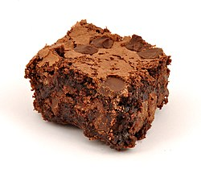

A chocolate brownie or simply a brownie is a chocolate baked confection. Brownies come in a variety of forms and may be either fudgy or cakey, depending on their density. Brownies often, but not always, have a glossy "skin" on their upper crust. They may also include nuts, frosting, cream cheese, chocolate chips, or other ingredients.
They are typically eaten by hand, often accompanied by milk, served warm with ice cream.